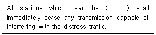
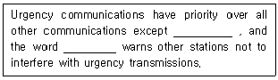
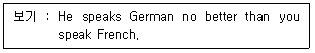
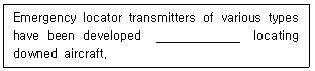
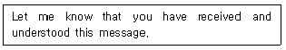
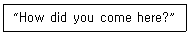
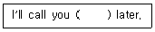

항공무선통신사 (2009-10-18 기출문제)
1과목: 전파법규
1. 항공국의 허가 유효기간으로 맞는 것을 고르시오.
- 1년
- 2년
- 3년
- 5년
(정답률: 91%)

2. 전방향표지시설(VOR)에 대한 설명이다. 옳지 않은 것은?
- 사용주파수는 108[㎒]부터 117.975[㎒]의 범위이다.
- 송신설비의 주반송파 변조방식은 주파수변조를 사용한다.
- 기준 위상신호 및 가변 위상신호를 연속하여 송신 할 수 있을 것.
- 식별신호는 모오스 부호에 의해 적어도 30초마다 1회 송신할 수 있을 것.
(정답률: 54%)
3. 다음 중 국제적으로 보호되는 호출, 응답용 주파수가 아닌 것은?
- 156.8 [MHz]
- 2,182 [KHz]
- 500 [KHz]
- 4,555 [KHz]
(정답률: 76%)
4. 다음 중 허가를 받지 아니하고 무선국을 개설하거나 이를 운용한 자에 대한 벌칙은?(2015년 12월 22일 개정된 규정 적용됨)
- 1년 이하의 징역
- 3년 이하의 징역 또는 3,000만원 이하의 벌금
- 5년 이하의 징역 또는 3,000만원 이하의 벌금
- 10년 이하의 징역 또는 5,000만원 이하의 벌금
(정답률: 76%)
5. 다음 중 항공지구국의 재허가 신청기간은?
- 허가유효기간 만료전 3월 이상 5월 이내의 기간
- 허가유효기간 만료전 2월 이상 4월 이내의 기간
- 허가유효기간 만료전 1월 이상 3월 이내의 기간
- 허가유효기간 만료전 2월 까지의 기간
(정답률: 67%)
6. 시설자의 지위를 승계하기 위해 방송통신위원회의 인가를 받아야 하는 경우는?
- 시설자가 사업을 양도하면서 그 사업과 관련된 무선국을 양도한 경우의 양수인
- 시설자에 대하여 상속이 있는 경우의 상속인
- 무선국이 있는 선박의 소유권 이전에 의하여 선박을 운항하는 자가 변경된 경우의 변경 후 선박을 운항하는 자
- 무선국이 있는 항공기의 임대차계약에 의하여 항공기를 운항하는 자가 변경된 경우의 변경 후 항공기를 운항하는 자
(정답률: 70%)
7. 다음 중 항공기의 정상운항에 관한 통신의 통보가 아닌 것은?
- 항공기의 운항계획 변경에 관한 통보
- 항공기의 예정 외 착륙에 관한 통보
- 시급히 입수하여야 할 항공기 부품에 관한 통보
- 항공교통 관제에 관한 통보
(정답률: 68%)
8. 다음 중 무선설비의 효율적 이용을 위하여 방송통신위원회의 승인을 얻어 위탁운용 또는 공동사용 할 수 있는 무선설비가 아닌 것은?
- 무선국의 공중선주
- 송신설비
- 무선종사자가 동일한 무선국의 무선설비
- 수신설비
(정답률: 45%)
9. 다음은 항공기국의 검사에 관한 설명이다. 옳지 않은 것은?
- 검사관은 조사 목적으로 무선국 허가장의 제시를 요구할 수 있다.
- 명백한 위규사항이 관찰되는 경우에는 무선설비를 검사할 수 있다.
- 검사관은 통신사의 자격증 제시를 요구할 수 있다.
- 검사관은 통신사에게 직무에 관한 전문지식의 입증을 요구할 수 있다.
(정답률: 95%)
10. 다음 중 전파의 효율적 관리 및 진흥을 위한 사업과 정부로부터 무선국검사 등의 위탁 받은 업무를 수행하기 위하여 설립된 법인은?
- 전파진흥협회
- 한국전파진흥원
- 정보통신진흥협회
- 한국통신기술협회
(정답률: 86%)
11. 항공이동업무에서 취급되는 통보의 정한 순서로 구성된 것은?
- 호출(발신국이 표시되는 것)-본문
- 호출(발신국이 표시되는 것)-“FOR”(구문인 경우에 한한다)
- 호출(발신국이 표시되는 것)-수신인 명칭
- 호출(발신국이 표시되는 것)-착신인 명칭
(정답률: 65%)
12. 다음 중 의무항공기국의 허가유효기간은?
- 10년
- 5년
- 무기한
- 3년
(정답률: 79%)
13. 다음 중 공중선계가 충족하여야할 조건으로 옳지 않은 것은?
- 정합은 신호의 반사손실이 최소화 되도록 할 것
- 공중선의 이득이 높을 것
- 지향성은 복사되는 전력이 목표하는 방향을 벗어나지 아니하도록 안정적일 것
- 공중선주의 높이가 충분할 것
(정답률: 76%)
14. 다음 중 항공기국과 항공국간 또는 항공기국 상호간의 무선통신업무를 무엇이라 하는가?
- 항공고정업무
- 항공무선항행업무
- 항공이동업무
- 항공업무
(정답률: 56%)
15. 다음 중 항공이동위성업무에 있어서 통신 우선순위가 가장 빠른 것은?
- 긴급신호에 의하여 전치된 통신
- 무선방향탐지와 관련된 통신
- 비행안전메시지
- 조난관련 통신
(정답률: 85%)
16. 항공기국은 당해 무선국에 설치되어 있는 각종 무선설비를 충분히 운용할 수 있는 자격자를 1명 배치하여야 한다. 해당자격이 아닌 것은?
- 전파통신기사
- 전파통신산업기사
- 전파통신기능사
- 항공무선통신사
(정답률: 80%)
17. 기지국과 육상이동국, 육상국과 이동국, 육상이동국 상호간 및 이동국상호간의 통신을 중계하기 위하여 설치하는 무선국을 무엇이라 하는가?
- 이동국
- 이동중계국
- 기지국
- 육상국
(정답률: 88%)
18. “공중선전력”이라 함은 무엇을 말하는가?
- 송신설비에서 공간으로 발사되는 전력
- 공중선에서 공간으로 발사되는 전력
- 공중선의 급전선에 공급되는 전력
- 송신설비의 종단부에 공급되는 전력
(정답률: 88%)
19. 검사기관인 한국전파진흥원에서 검사를 실시하는 무선국이 아닌 것은?
- 한국방송공사 소속 고정국
- 소방서 소속 육상이동국
- 이동통신사업자 이동중계국
- 국영기업체 소속 고정국
(정답률: 67%)
20. 다음 중 청문대상이 아닌 것은?
- 무선국 개설허가의 취소
- 형식검정의 합격 취소
- 무선국검사 합격 취소
- 무선종사자 기술자격의 취소
(정답률: 57%)
2과목: 기초전파공학
21. SSR 의 특징이 아닌 것은?
- 방위는 알 수 있지만 거리는 알 수 없다.
- 레이더 화면에 항공기 추가정보 표시를 가능하게 한다.
- 질문기와 응답기로 구성된다.
- 항공기측에서 고도 또는 항공기 식별 코드를 응답할 수 있다.
(정답률: 60%)
22. 다음 중 RAM 에 관한 설명이 잘못된 것은?
- 기억된 내용을 읽기만 하고 기억할 수 없다.
- 일반 프로그램에서 필요한 데이터를 저장 시킬 수 있다.
- 일반적인 프로그램이나 데이터를 기억 시킬 수 있다.
- 임의로 데이터를 기억시키고, 기억된 내용을 읽을 수 있다.
(정답률: 65%)
23. 초단파의 전파 특성을 설명한 것으로 잘못된 것은?
- 주파수가 높기 때문에 지표파는 감쇠가 크다.
- 직접파와 대지 반사파에 의해서 수신 전계가 정해진다.
- 지상에서의 직접파는 기하학적인 가시거리보다 약간 멀리 전달된다.
- 태양의 활동에 따라 수신 전계의 변화가 극심하다.
(정답률: 35%)
24. 측정기가 갖추어야 할 일반적인 조건이 아닌 것은?
- 측정오차가 적을 것
- 측정값의 확도가 높을 것
- 안정도가 좋을 것
- 동작전원은 교류전원일 것
(정답률: 62%)
25. 안테나의 특징을 나타내는 요소로 적당하지 않은 것은 무엇인가?
- 임피던스
- 지향성
- 이득
- 주파수 대역폭
(정답률: 35%)
26. 전기장과 자기장이 직각으로 진행하는 파동을 무엇이라 하는가?
- 펄스
- 정현파
- 파장
- 전자파
(정답률: 56%)
27. 다음 중 마이크로파 통신의 특징이 아닌 것은 무엇인가?
- 파장이 짧다.
- 지향성이 강하다.
- 주파수 대역폭이 크다.
- 다중통신이 불가능하다.
(정답률: 57%)
28. 100[W]의 송신기 전력이 3dB만큼 떨어졌다. 이 때 송신기 출력은?
- 10 [W]
- 50 [W]
- 100 [W]
- 200 [W]
(정답률: 36%)
29. 지상파의 전기장강도에 영향을 주는 것이 아닌 것은 무엇인가?
- 송신기 출력
- 대기의 온도와 습도
- 송신안테나 특성
- 바람의 세기
(정답률: 41%)
30. 항공기가 NDB시설을 이용하여 해안지역을 통과비행시 ADF에 나타나는 오차를 줄이기 위한 최선의 비행방법은?
- 해안선에 평행하게 비행한다.
- 해안선을 직각으로 통과할 수 있도록 비행한다.
- 저고도로 비행한다.
- 해안선과 45° 각도로 비행한다.
(정답률: 40%)
31. 다음 중 TACAN 오차를 방지하기 위한 방법이 아닌 것은?
- TACAN국 식별을 점검하고 Monitor한다.
- ADF, VOR, Radar등 다른 항법장비를 함께 이용한다.
- 비행 전에 사용하게 될 지상국의 각종 정보를 미리 점검한다.
- TACAN국을 수시로 바꾼다.
(정답률: 45%)
32. ILS의 기본시설 중 활주로에 접근하는 진입각에 대한 수직유도정보를 제공하여 주는 지상시설은 무엇인가?
- Localizer
- Outer Marker
- Middle Marker
- Glide Slope
(정답률: 39%)
33. 수정 발진기의 주파수 안정도가 높은 이유 중 잘못된 것은?
- 수정편의 Q가 매우 높다.
- 부하 변동의 영향을 전혀 받지 않는다.
- 발진 조건을 만족시키는 유도성 주파수 범위가 매우 좁다.
- 기계적으로나 물리적으로 안정하다.
(정답률: 39%)
34. 이상적인 연산증폭기의 특성으로 적절한 것은?
- 입력저항이 0이다.
- 출력저항이 무한대이다.
- 전압이득이 무한대이다.
- 대역폭과 지연응답이 0이다.
(정답률: 37%)
35. 항공기 사고 시 수색 및 구조를 위한 121.5[MHz]의 비상위치지시용 무선표지설비(ELT)에 대한 기술기준에 해당되지 않는 것은?
- 주파수 허용오차는 ±0.0⑤% 이내이어야 한다.
- 작동온도는 영하 20도에서 48시간 작동하여야 한다.
- 반송파는 최소 0.85의 변조도에서 진폭변조(AM)가 되어야 한다.
- 전력의 최소 0%될 때까지는 항상 121.5[MHz] 반송파 주파수의 ±30[Hz] 이내로 유지되어야 한다.
(정답률: 31%)
36. 전자회로의 직류전압을 일정하게 유지하기 위해서 필요한 회로는 무엇인가?
- 배전압 정류회로
- 정전압 회로
- 브리지 정류회로
- 분류 정류회로
(정답률: 29%)
37. R-S 플립플롭을 이용하여 R와 S 입력 사이를 NOT 게이트로 연결한 플립플롭은?
- T형 플립플롭
- D형 플립플롭
- RST형 플립플롭
- MS형 플립플롭
(정답률: 34%)
38. 송신기에서 발사되는 공중선 전력을 측정할 수 있는 계기는?
- Watt Meter
- Frequency Counter
- Generator
- Oscilloscope
(정답률: 63%)
39. 다음 중 파장이 짧아서 취급하기 쉬운 안테나는 무엇인가?
- 장파안테나
- 중파안테나
- 단파안테나
- 초단파안테나
(정답률: 62%)
40. 공진하고 있는 R, L, C 직렬회로에 있어서 저항 R 양단의 전압은 인가전압의 몇 배인가?
- 인가전압의 1/2이다.
- 인가전압과 같다.
- 인가전압의 2배이다.
- 인가전압의 4배이다.
(정답률: 37%)
3과목: 통신보안
41. 전령통신의 취약점으로 볼 수 없는 것은?
- 정보를 탐지하려는 사람으로부터 피습을 당할 우려가 있다.
- 때와 장소에 따라 영향을 받는다.
- 신호누설에 의한 기만 및 역이용을 당할 우려가 있다.
- 계절 또는 기후의 영향을 받는다.
(정답률: 50%)
42. 통신정보활동의 수단으로 맞는 것은?
- 통신정보를 방어하기 위한 활동 수단
- 통신내용의 도청을 저지하는 수단
- 누설된 정보 분석을 지연시키는 수단
- 통신내용을 수집?분석하여 유용한 정보생산 수단
(정답률: 71%)
43. 다음 중 우편통신의 취약성으로 잘못 설명된 것은?
- 수취인에 대한 정확한 전달이 가능하다.
- 국가 공신력에 의하여 취급되나 피습을 당할 우려가 있다.
- 다른 통신수단에 비하여 비교적 신속성이 결여된다.
- 보통우편의 경우 분실에 대한 책임 보장이 없다.
(정답률: 56%)
44. 다음 중 통신보안도가 상대적으로 가장 높은 통신수단은?
- 등기우편
- 음향통신
- 전기통신
- 시호통신
(정답률: 60%)
45. 기만통신에 대한 방어로서 상호 약정된 확인법을 사용하는 경우가 아닌 것은?
- 처음 통신을 시작할 때
- 상대통신소가 의심스러울 때
- 주파수를 변경했을 때
- 불필요한 통신을 계속할 때
(정답률: 44%)
46. 약호자재의 보안 등급은?
- I 급 비밀
- II 급 비밀
- III 급 비밀
- 대외비
(정답률: 43%)
47. 교신분석 방어책이 아닌 것은?
- 통신시간 및 통신량의 조절 통제
- 통신제원 및 통신운용 관계사항 은폐
- 의심되는 전파의 방탐 활동
- 통신소의 고유명칭 및 발수신자의 은폐
(정답률: 46%)
48. 비밀이나 중요내용이 통신에 의해 누설되는 요소에 해당되는 것은?
- 비밀내용의 암호화
- 통신문의 사전 보안성 검토
- 과다한 통신소통
- 안전성 있는 통신망 이용
(정답률: 64%)
49. 다음의 정보수집 활동 중 동일한 통신소로 가장하여 상대를 오인시키는 통신행위는?
- 기만통신
- 교신분석
- 방해통신
- 통신내용의 분석
(정답률: 69%)
50. 통신보안 방법에 해당되지 않는 것은?
- 인원보안
- 자재보안
- 암호보안
- 송신보안
(정답률: 66%)
4과목: 영어
51. 항공무선 통신에서 고도계 수정치 29.92 를 송신할 때 맞는 것은?
- Two nine point nine two
- Two niner niner two
- Twenty nine decimal ninety two
- Twenty nine ninety two
(정답률: 45%)
52. “( ) New York’s proximity to New Jersey, it is an important link in the nation’s transportation system.” 위 문장의 ( ) 안에 들어갈 내용중 가장 적절한 것은?
- Resulting
- Since
- Because of
- However
(정답률: 59%)
53. ATC authorization for an aircraft to make a touch-and-go, low approach, missed approach, stop and go, or full stop landing at the discretion of the pilot is.
- Cleared to land
- Cleared for take off
- Cleared for the option
- Cleared for low approach
(정답률: 38%)
54. 다음 괄호 속에 들어가는 가장 적합한 것을 고르시오.

- service call
- emergency call
- distress call
- stations call
(정답률: 76%)
55. 다음 밑줄 친 곳을 알맞게 순서대로 나열한 것은?

- distress, PAN-PAN
- distress, MAY-DAY
- emergency, PAN-PAN
- emergency, MAY-DAY
(정답률: 56%)
56. An inside aircraft communication system for the crew is called
- Interphone system
- Transmitter system
- Receiver system
- Transponder system
(정답률: 75%)
57. 다음 중 “ROGER”의 의미에 대한 설명으로 맞는 것은?
- I’ve received all of your last transmission
- Can be used to answer a question requiring yes or no
- Ready to take off
- Ready to touchdown
(정답률: 75%)
58. ATC authorization for an aircraft to land is;
- Cleared to land
- Cleared for take off
- Cleared for the option
- Cleared for low approach
(정답률: 67%)
59. “귀하는 D8AA로 부터의 조난신호를 수신하였습니까” 의 가장 적절한 표현은?
- Do you have any information about D8AA?
- Have you received the urgency signal sent by D8AA?
- Have you had any information about D8AA?
- Have you received the distress signal sent by D8AA?
(정답률: 72%)
60. 보기의 예문의 뜻을 가장 잘 나타내는 것은?(오류 신고가 접수된 문제입니다. 반드시 정답과 해설을 확인하시기 바랍니다.)

- You speak French very well.
- He speaks German well.
- He speaks German well, but not so well as you speak French.
- You speak French as good as he speaks German.
(정답률: 64%)
61. “귀 국은 혼신을 받고 있습니까”의 가장 적절한 영문 표현은?
- Are you interfered to other station?
- Are you being interfered with?
- Do you interfere the other station?
- Have you interfered the other station?
(정답률: 31%)
62. The component of the total aerodynamic forces acting on an airfoil perpendicular to the relative wind is called.
- Lift
- Drag
- Weight
- Thrust
(정답률: 57%)
63. 다음 밑줄친 곳에 알맞은 것은?

- by all means
- as a means of
- by a mean of
- meanwhile
(정답률: 47%)
64. The highest point of an airport’s usable runways measured in feet from mean sea level is called.
- field elevation
- highest obstacle
- high of obstacle
- highest field obstacle
(정답률: 51%)
65. The term used by ATC to request an aircraft’s heading is
- Report your direction
- Say altitude
- Say heading
- Say intention
(정답률: 64%)
66. Any radio frequency from 30 to 300MHz is defined as
- Low frequency
- Medium frequency
- High frequency
- Very high frequency
(정답률: 62%)
67. 다음 문장의 의미로 쓰이는 항공통신 용어는 어느 것인가?

- Roger
- Acknowledge
- Wilco
- Affirmative
(정답률: 72%)
68. 다음 질문에 대한 대답으로 가장 적절한 것은?

- On business
- On foot
- To see you
- Because I missed you
(정답률: 61%)
69. “그는 너무 뚱뚱해서 계단을 오를 수 없다”를 영작한 문장으로 가장 적절한 것은?
- He is so fat that walk up the stairs.
- He is too fat that he can walk up the stairs.
- He is too fat to walk up the stairs.
- He is too fat for he can’t walk up the stairs.
(정답률: 73%)
70. 전화상으로 “추후 다시 전화 드리겠습니다”라고 말할 때 ( )안에 알맞은 말은?

- soon
- some
- back
- after
(정답률: 67%)